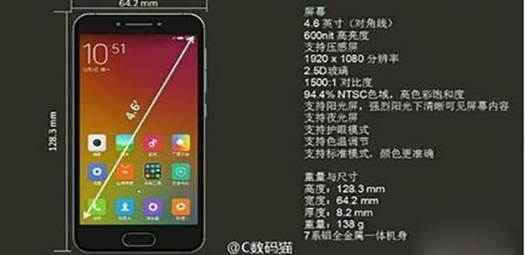
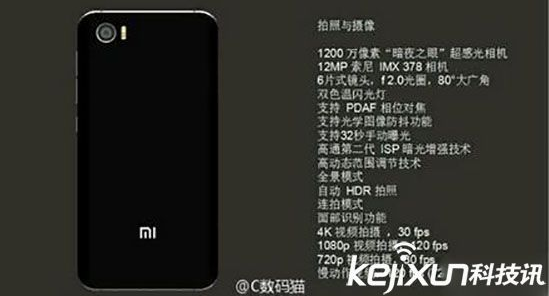
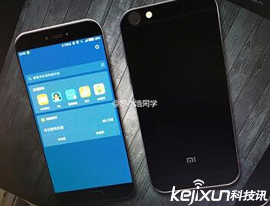
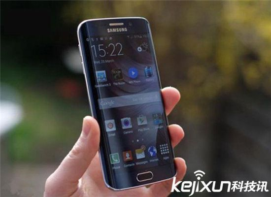
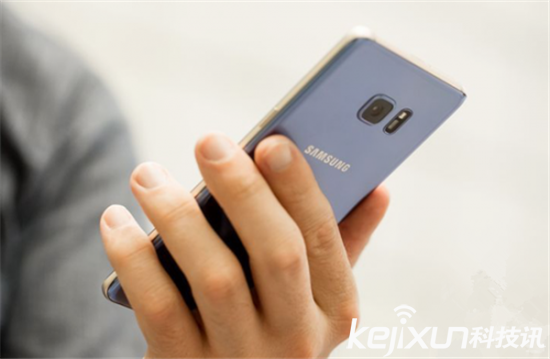
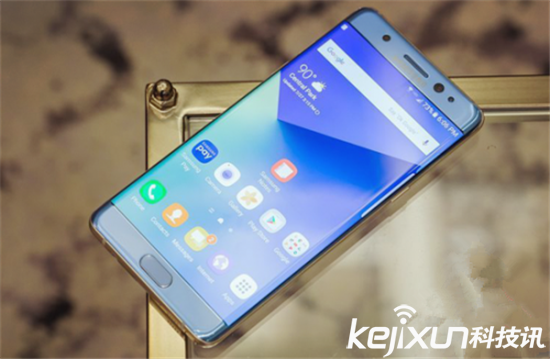
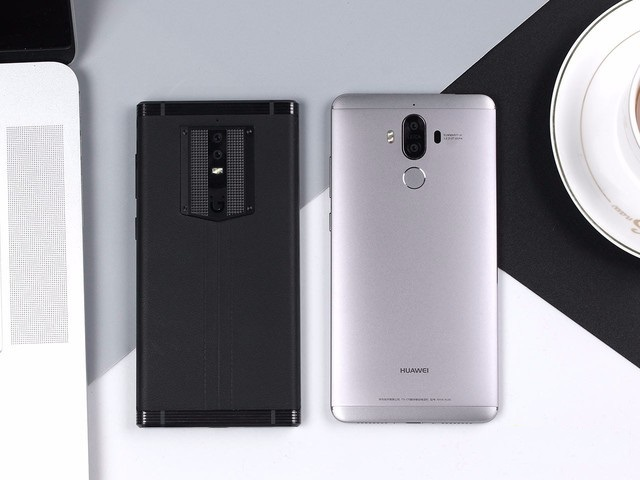
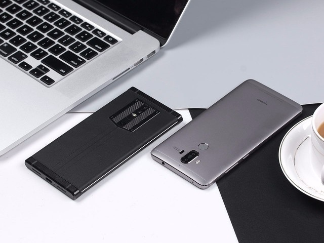
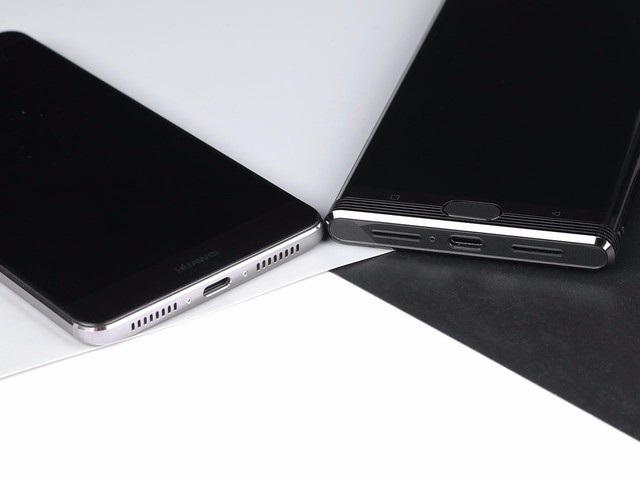

头条
小米5C配置再度曝光：采用4.6英寸屏幕 搭载暗夜之眼镜头

小米5C在像素方面采用了1200万像素的后置超感光相机，搭载了索尼MIX378传感器，拥有6P镜头和F/2.0大光圈。

小米5C支持双卡双待，正面有指纹识别系统，支持阳光屏、夜光屏、分辨率为1920X1080，支持压感屏幕等。

除此以外，该机还采用Type-C接口，支持红外和3.5毫米耳机插孔，以及全网通，整体配置来看，该机可以被称为旗舰机型，当然，这也是传闻，还要等小米官方发布为主。
12月27日消息，三星Note 7爆炸事件或许是智能手机历史上最大的一次消费者安全事件，如今三星已经召回了约90%的Note 7手机，从Galaxy Note 7发布到全球正式召回，三星在市场上发售了306万部手机。

不久前的统计显示，三星Note 7在韩依然有14万部，考虑到产品缺陷，它们就是“定时炸弹”。

12月27日消息，三星Note 7爆炸事件或许是智能手机历史上最大的一次消费者安全事件，如今三星已经召回了约90%的Note 7手机，从Galaxy Note 7发布到全球正式召回，三星在市场上发售了306万部手机。

金立M2017和华为Mate9都是有着浓浓商务手机的标签属性

金立借力冯小刚徐帆等重星捧场，发布了年度旗舰大作金立M2017

无论是华为Mate系列还是金立M2017，都有冲刺到万元之上的产品，即便入门版本同样也是秒掉iPhone7的价格。
